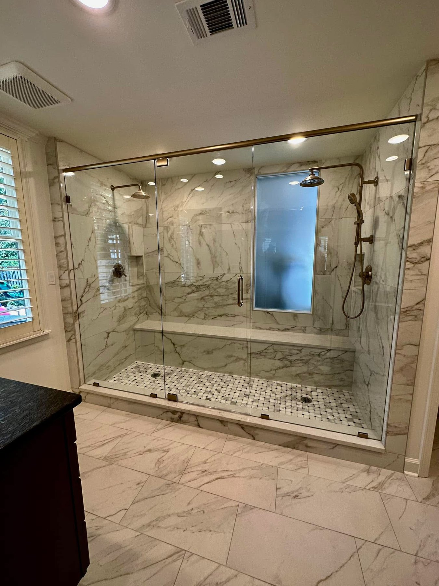
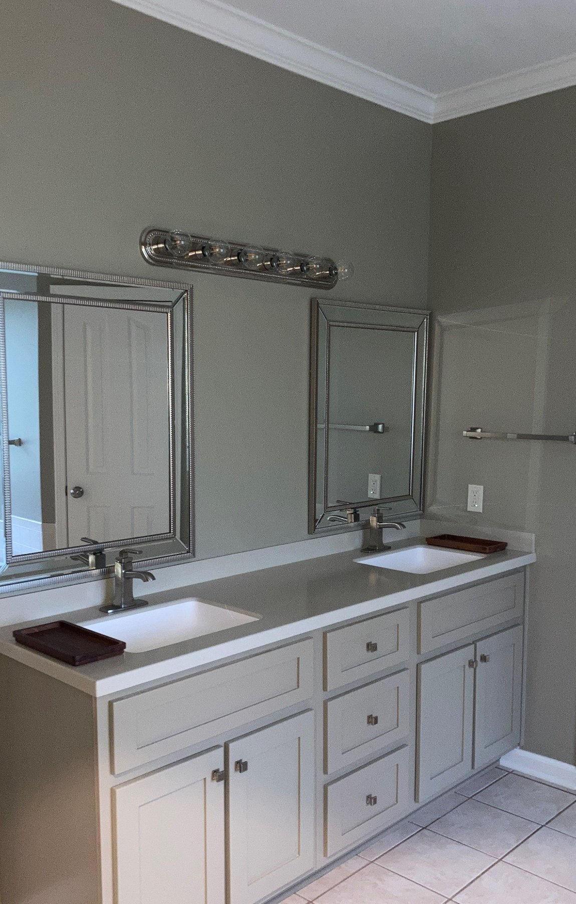
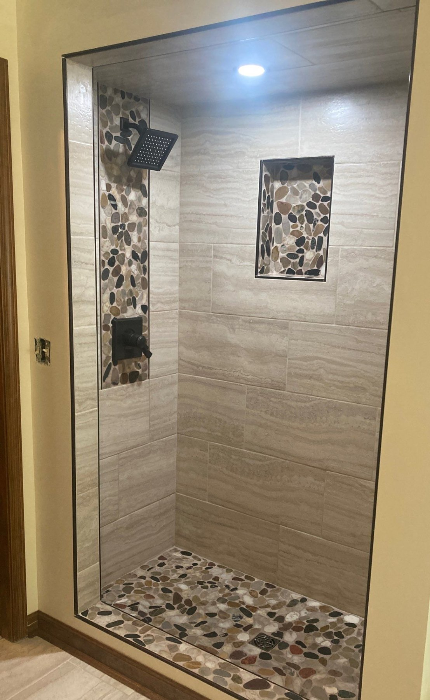
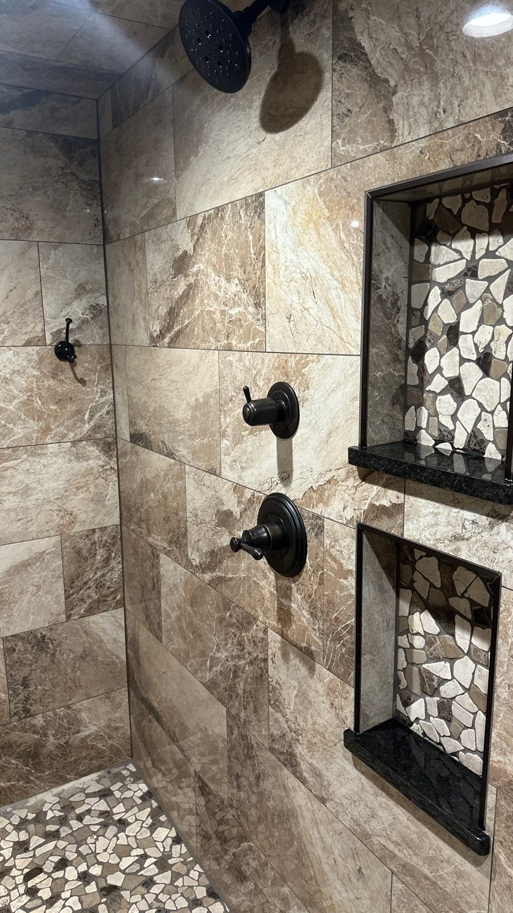
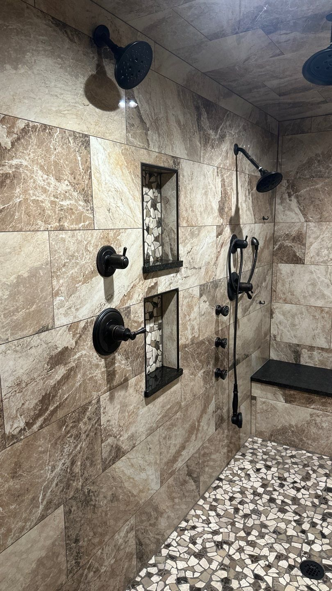
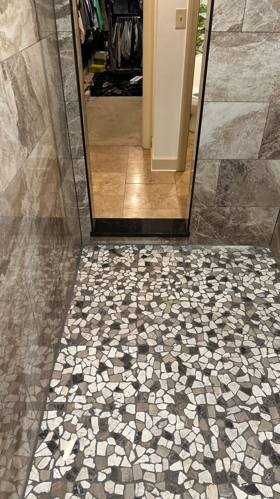

A Shower Built for the Room
Plan the shower around the available space, preferred entry, glass enclosure, tile layout, fixtures, storage, and the way you want to use it every day.
Learn moreYour bathroom should make daily life easier, more comfortable, and more enjoyable. Crain Bros Inc plans the shower, vanity, storage, lighting, flooring, fixtures, and finished details around the room you have and the way you want to use it.
Maybe the bathroom feels dated, the shower is uncomfortable, storage is limited, or the room simply does not work as well as it should. We begin by listening to what you want to improve, how the bathroom is used each day, and what would make the finished space more comfortable and useful for you.
Crain Bros Inc is a family owned and operated Arkansas contractor that has served property owners across Northeast Arkansas since 1984. We bring decades of local construction and remodeling experience to the entire bathroom, not just the visible finishes. Our team can coordinate the shower, plumbing, electrical, lighting, ventilation, cabinetry, countertops, flooring, drywall, painting, trim, and other connected work as one complete project. That gives you one accountable contractor focused on how the whole bathroom should function, look, and hold up over time.
Whether you are planning a focused update or a complete bathroom remodel, we help bring the layout, materials, fixtures, storage, lighting, and finishes together around your property and your priorities. The goal is a bathroom that feels comfortable, looks complete, and fits naturally into your home.
A bathroom remodel is more than choosing attractive finishes. Each part of the room should support comfort, storage, movement, cleaning, lighting, and everyday use. These completed details show some of the choices that can be coordinated as part of a larger bathroom plan.

Plan the shower around the available space, preferred entry, glass enclosure, tile layout, fixtures, storage, and the way you want to use it every day.
Learn more
A well-planned vanity gives you comfortable counter space, practical storage, properly placed mirrors, and a finished area that fits the size of the bathroom.
Learn more
Tile size, pattern, color, grout, transitions, and surrounding finishes can be coordinated so the shower and the rest of the bathroom feel like one complete space.
Learn more
Shower controls, heads, handheld fixtures, valves, drains, sinks, and other plumbing details should be selected and placed around comfort and convenient daily use.
Learn more
Niches, shelves, benches, vanity storage, and other built-in details can keep everyday items close at hand without making the finished bathroom feel crowded.
Learn more
The shower floor, tile layout, slope, drain position, curb or entry, and surrounding transitions need to be planned together before the finished surfaces are installed.
Learn moreA complete bathroom remodel can involve much more than replacing the visible fixtures. Depending on the existing room and the approved project scope, the work may connect framing, waterproofing, plumbing, electrical, lighting, ventilation, cabinetry, countertops, flooring, insulation, drywall, painting, trim, windows, doors, and finished shower or tub details.
Crain Bros Inc can coordinate these connected services as one managed bathroom project. That keeps the layout, trade sequence, material selections, rough-in work, waterproofing, finishes, and final details tied to the same plan and gives the property owner one accountable contractor throughout the work.
We begin with the existing room, how it is used, what the property owner wants to improve, and how the shower, vanity, storage, fixtures, lighting, ventilation, and walking space need to work together.
Existing fixtures, cabinets, flooring, wall finishes, shower materials, and other components can be removed with dust control, debris handling, and protection of the surrounding home.
Walls, openings, shower dimensions, doors, backing, blocking, and structural framing can be changed when the new bathroom layout requires more than a surface update.
Learn moreWet areas require planned waterproofing, transitions, penetrations, drainage, and material connections so water stays where the bathroom design intends it to go.
Learn moreWalk-in showers, tile showers, tub surrounds, entries, glass openings, benches, niches, fixtures, drains, and finished details can be designed as part of the complete bathroom.
Learn moreWater lines, drains, valves, shower fixtures, sinks, faucets, toilets, tubs, and plumbing relocations are coordinated with the final layout and selected fixtures.
Learn moreBathroom electrical work can include lighting, vanity lights, outlets, switches, dedicated circuits, fixture connections, and changes required by the new layout.
Learn moreExhaust ventilation, duct connections, heating and cooling considerations, and airflow are coordinated with the room size, shower location, ceiling, lighting, and moisture load.
Learn moreVanities, drawers, cabinets, built-ins, shelves, linen storage, and other storage features can be sized and arranged around the room and daily use.
Learn moreCountertop materials, edge details, sink openings, backsplashes, faucet placement, wall conditions, and cabinet measurements are coordinated with the vanity installation.
Learn moreBathroom flooring, shower tile, wall tile, transitions, grout, patterns, and finished surfaces are planned around wet areas, fixtures, doors, cabinets, and adjoining rooms.
Learn moreWhen walls, ceilings, or floors are open, insulation can be installed or improved where the bathroom connects to exterior walls, attics, crawlspaces, or interior rooms.
Learn moreDrywall replacement, finishing, texture matching, wall preparation, and repairs connect remodeled areas to the room and prepare surfaces for the final finish.
Learn moreWalls, ceilings, doors, trim, and prepared surfaces can be painted as part of the coordinated remodel so the finished room does not stop at the construction work.
Learn moreBaseboards, casing, door trim, cabinet trim, transitions, shelving, and other finish details help the completed bathroom connect cleanly with the rest of the home.
Learn moreBathroom windows, interior doors, openings, privacy considerations, casing, hardware, and framing changes can be included when they are part of the approved scope.
Learn moreProperty owners come to us with different priorities. Some want to replace an outdated room. Others want a more comfortable shower, better storage, brighter lighting, easier movement, or finishes that finally feel coordinated. The remodel should begin with the improvements that matter most to you.
Replace worn or dated finishes and bring the shower, vanity, fixtures, flooring, lighting, paint, and trim together in a room that feels fresh and complete.
Use the available wall and floor space more effectively with a properly sized vanity, drawers, cabinetry, built-ins, niches, shelves, and countertop space.
Improve the entry, size, fixture placement, storage, glass, tile, bench details, or tub arrangement so the bathing area better fits your routine.
Coordinate materials, colors, lighting, fixtures, flooring, paint, trim, and finish details so the bathroom looks intentional instead of pieced together.
Tell us what is not working, what you would like to change, and what you want the finished bathroom to feel like. Crain Bros Inc can help you plan the room and coordinate the work from the first layout decisions through the finished details.
Call Us About Your Bathroom RemodelStart with what you want the bathroom to do better: the shower or tub area, vanity, storage, lighting, flooring, fixtures, and the finished look of the room.
Yes. If the existing layout still works, the remodel can focus on visible updates such as the shower or tub area, vanity, lighting, fixtures, flooring, paint, trim, and finished details.
Yes. A custom shower can be part of a full bathroom remodel or handled as a focused shower update.
Common high-impact upgrades include a better shower or tub area, improved vanity storage, brighter lighting, updated fixtures, new flooring, cleaner wall finishes, and finished trim and paint.
Yes. Vanities, lighting, flooring, fixtures, trim, paint, and other finish work can be coordinated as part of the remodel.
Yes. Crain Bros Inc provides bathroom remodeling and related construction services across Northeast Arkansas.